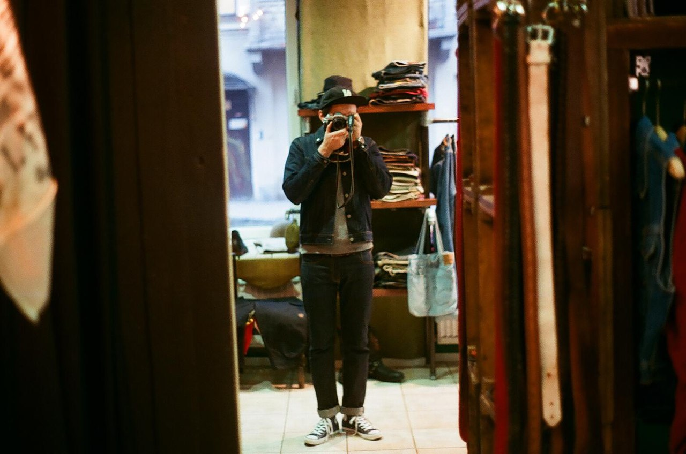

Фотограф
Михаил Скопенко
обо мне
Привет, меня зовут Михаил Скопенко и эта страница посвещяна моим фотографиям, я снимаю уже лет 10. начинал с совестких пленочных фотоаппратов , а последние лет шесть снимаю на minolta x300 .
Зачем это?
Зачем нужен этот сайт? В певрую очередь я просто хотел создать сайт , верстать макеты непонятно чего мне надоело и потому я решил сделать сайт имени себя, а точнее о своей ипостасии фотографа. ну и плюс мне хотелось как то упорядочить свои фотографии,а в третьих что конечно мало вероятно, но вдруг кто то наткнувшись на этот сайт захочет пофотографироваться у меня что тоже было бы приятно.
Галерея
А вот и сами фото они разделены по годам, как мне кажется со временем я немного спрогресировал.
2008-2010 год


2011-2014 год


контакты
Ваши предложения можете отправлять мне напочту с помощью форму ниже